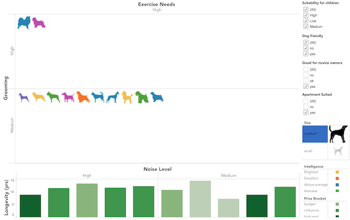

Dogs. Dogs inspired me to make this visualization. I have always wanted a dog for so long. Now that I can finally get one, I needed to pick something suitable for my living situation. Thus, the idea of this graph was born.
This graph narrows down the breed of dogs depending on your choice in size, intelligence, price bracket and noise level. It also helps you choose breeds according to whether you are a first time dog owner (like me) or live in an apartment (like me). For those who already have a dog or have children, I have even included selectors for friendliness of dog breeds towards children or other dogs.
I used Tableau to make this visualization. Personally, I had a lot of fun making this graph and getting to learn about different dog breeds. I found this site fun to go through. They even had their own version of Dog Breed Selector!
I think this graph is fairly self explanatory and you can click through most fields to narrow down the breeds of dog.

So... Which dog breeds are suitable for me? I don't have children or other dogs at home, so I am going to keep that at "All". Yes, I am a novice owner. Yes, I live in an apartment. Definitely do not want a dog too big otherwise it will be the one taking me for a walk and not the other way around. I don't want too small dogs either, so I'll leave that at medium.